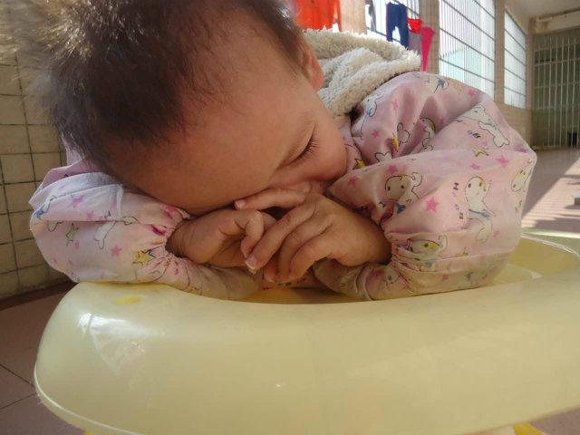
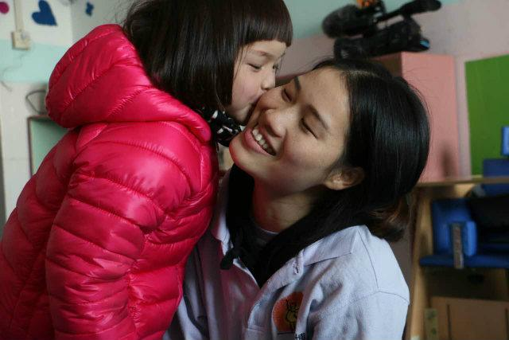
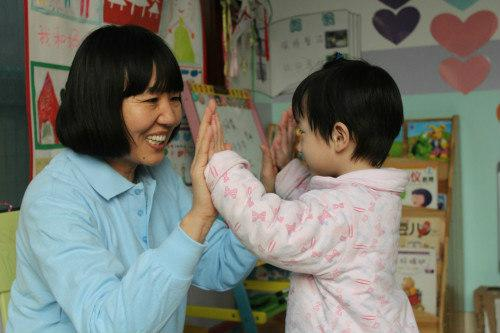
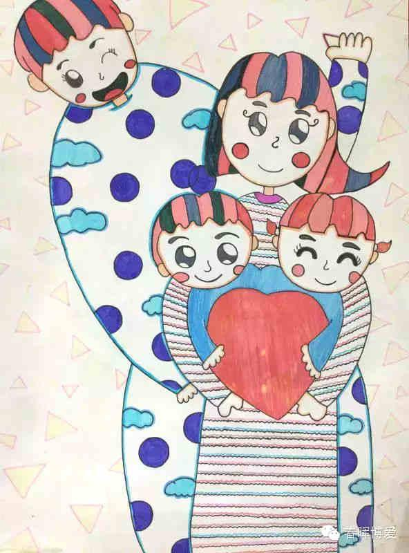
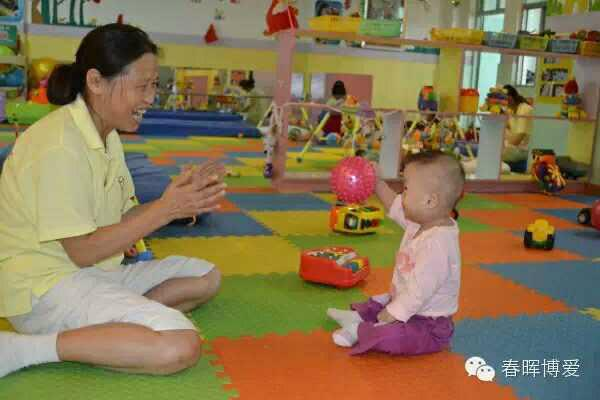

给孤儿妈妈般的爱
时间：2016-05-08 22:43:44 来源：腾讯公益
每个孩子都是独特的，但他们有一个共同的需求，那就是爱与被爱。那么失亲的孤儿谁来爱？科学证明，没有爱的婴孩很难分泌成长所必须的荷尔蒙。他们的脑得不到刺激成长的机会，他们很可能会有学习障碍，社交障碍，对人没有信任，长大后甚至难保一份工作，可能永远学不会爱，那么我们能为这些孩子做什么吗？春晖妈妈就是弥补这个需要的最好方式。只要我们一起努力，终会有那么一天，每个失亲的孩子，都可以说，因为有你，我不孤单。
- 娟娟来到春晖博爱项目的时候3岁多，不会说话，不会走路，无法抬头。其实这之前有外国的一对夫妇领养过她，但是后来他们无奈放弃了，他们说娟娟是有自闭症的孩子。春晖博爱接收了娟娟，春晖妈妈李虾妹开始了无微不至的照顾，每天逗她玩，亲吻她、拥抱她。像写日记一样精心记录下娟娟成长点滴，配上精美图片，制成画册（孩子离开福利院的时候，成长手册交给领养的父母）。渐渐地，娟娟开朗起来，会笑着和他人沟通、和小伙伴玩耍…
- 
- 现在娟娟已经6岁，被广州一对夫妇领养。每一天春晖项目里都有这样生命蜕变的故事，我们希望更多的孤残儿童在我们的帮助下，有个阳光的童年，有被人关怀、需要的感觉。
- 
- 孩子们的画：
- 
- 春晖博爱通过聘用并培训全职专业「春晖妈妈」，500元/月，就可以支持她们让一个失去亲人的孤儿，从小在「春晖妈妈」的爱、陪伴和亲吻中成长。我们的目标是让每一个孩子都感受到关爱，深知生命的意义，为自己创造光明的未来。
- 
- 春晖博爱项目作为中华儿慈会的合作项目，专门救助全国福利院的孤残儿童。春晖博爱的团队早于1998年就已经开始投入帮助中国弱势儿童的工作，2012年在北京正式注册基金会。春晖博爱延续了美国半边天基金会的成功经验，在各地合作的福利院中招募与培训当地全职的“春晖妈妈”为孩子们提供科学、系统、持续和专业化的照料。
- 
下一篇：福建省血液中心无偿献血